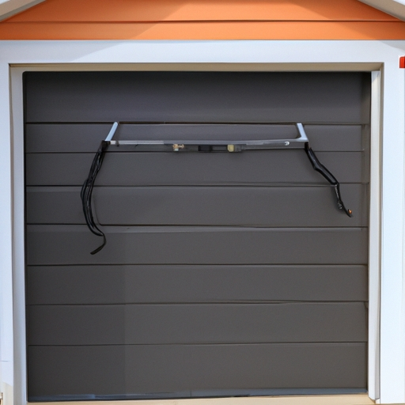

Causes of uneven movement, including worn-out or broken garage door springs.
Uneven movement or crookedness of the garage door when in operation can be a real nuisance! It's downright frustrating when you press that button, expecting smooth and steady motion, only to witness your beloved garage door moving all wonky. But fear not, my friend, for there are causes behind this uneven movement that we can tackle head-on!
One possible culprit for this wonkiness is worn-out or broken garage door springs. These trusty springs bear the weight of the door and assist in its smooth operation. However, over time, these springs can become worn out (or broken), leading to an imbalance in the forces at play. Consequently, one side of your garage door may lift faster than the other (unlike). This disparity causes an uneven movement that can leave your door looking somewhat lopsided.
Another factor contributing to this unsightly crookedness could be poor alignment or track issues. If your garage door tracks are bent or misaligned, it can hinder the proper functioning of the rollers and pulleys (whoa!). As a result, one side of the door might lag behind while the other side tries to catch up like a stubborn turtle racing against a speedy hare.
Moreover, let's not forget about pesky obstructions! Sometimes objects like debris or small rocks find their way into our sacred garage space (gross!). When these foreign invaders get lodged in between the tracks or underneath the wheels of your garage door, they disrupt its natural trajectory. This disturbance leads to an irregular movement pattern that will surely make you scratch your head in bewilderment.
In conclusion (to wrap things up), several factors can contribute to an uneven movement or crookedness of your garage door during its operation. Worn-out or broken springs create an imbalance that makes one side lift faster than the other. Poor alignment or track issues cause friction between rollers and pulleys resulting in lagging movements on one side. And let's not forget about those sneaky obstructions that disrupt the door's natural path. So, next time your garage door decides to go all wonky on you, remember to check these common causes and take action accordingly!
Importance of addressing the issue promptly to prevent further damage or accidents.
The Importance of Addressing Garage Door Issues Promptly to Prevent Further Damage or Accidents
When it comes to the uneven movement or crookedness of your garage door, addressing the issue promptly is absolutely crucial! Neglecting this problem can lead to more severe damage and even accidents! Who wants that? No one!
Firstly, let's talk about why addressing the issue promptly is important. (Well, duh!) An uneven or crooked garage door can be a sign of underlying problems with the door's alignment or mechanism. If left unattended, these issues can worsen over time and result in further damage to your precious door and its components.
Moreover, a malfunctioning garage door poses serious safety risks. Imagine if the door suddenly gets stuck while opening or closing - it could potentially cause harm to you, your family members, or even your beloved car! I mean, nobody wants their car squished like a bug by a wonky garage door, right?
By taking swift action when you notice any signs of uneven movement or crookedness in your garage door, you can prevent these unfortunate incidents from occurring. Plus, getting the necessary repairs done promptly will save you both time and money in the long run. (Who doesn't love saving some cash?) Trust me on this one!
To sum up, addressing issues with an unevenly moving or crooked garage door as soon as possible is vital for preventing further damage or accidents. So don't procrastinate! Take action now and call a professional to fix that wobbly beast before it causes havoc in your life! Seriously though – better safe than sorry!
In conclusion, it is essential to tackle any problems with garage doors swiftly in order to avoid exacerbating existing issues (like seriously!). By doing so, you protect yourself against potential accidents (nobody wants that!). Remember: prompt attention saves time and money (cha-ching!). So go ahead and be proactive – your garage door will thank you!
Steps involved in garage door spring replacement, including safety precautions.
Uneven movement or crookedness of the garage door when in operation can be a big hassle, but fear not! There are steps involved in garage door spring replacement that can help solve this problem. It's important to follow these steps carefully and take necessary safety precautions to avoid any mishaps.
Firstly, (however), it is crucial to understand that garage door spring replacement is a task best left to professionals. Attempting this task without proper knowledge and experience can lead to serious injuries or damage to your property. Therefore, (in order words), it is highly recommended to hire a qualified technician who specializes in garage door repairs.
Once you have hired a professional, they will begin by inspecting the garage door and identifying the cause of the uneven movement or crookedness. This could be due to worn-out springs, damaged cables, or misaligned tracks. They will then proceed with replacing the faulty springs.
During the spring replacement process, it is essential to adhere strictly to safety protocols. This includes wearing protective gear such as gloves and goggles (!)to prevent any potential harm from flying debris or accidents. Additionally, always disconnect the power supply before working on the garage door (!).
Next, your technician will carefully remove the old springs and replace them with new ones. It's crucial that they select the appropriate size and type of springs for your specific garage door model (!). Using incorrect springs can lead to further problems and put additional strain on other components of your garage door system.
Finally, once the new springs are installed correctly, your technician will perform thorough testing (!)to ensure smooth and even movement of your garage door. They may also make necessary adjustments to align tracks properly if needed.
In conclusion (+), addressing uneven movement or crookedness of your garage door requires professional assistance for safe and effective resolution (-). By following these steps during a spring replacement process (+), you can restore proper functionality (-)and enjoy peace of mind knowing that your garage door is operating smoothly and safely. So, don't hesitate to seek professional help when dealing with such issues (+)and avoid taking unnecessary risks (-).
Tools and materials required for the replacement process.
Uneven movement or crookedness of the garage door when in operation can be quite bothersome. It not only affects the functionality but also poses a safety risk (!). However, fear not as there are tools and materials required for the replacement process that can help fix this issue (believe it or not!).
To begin with, one of the most essential tools you will need is a leveler. This nifty gadget helps determine if your garage door is properly aligned or if it's tilting to one side (yikes!). By using the leveler, you can accurately assess how uneven your garage door's movement actually is.
Next up on our list of must-haves is a sturdy ladder. Yes, I know climbing ladders may sound daunting (oh no!), but trust me, it's necessary for this task. You'll need to climb up and get a closer look at your garage door tracks to see if they are bent or misaligned.
Now let's talk about some materials you'll need for the replacement process. One crucial item is a set of replacement rollers. These little wheels play a vital role in ensuring smooth and even movement of your garage door (!). If they are worn out or damaged, they might cause that annoying crookedness we're trying to fix.
Another material that shouldn't be forgotten is a good old-fashioned wrench. This handy tool allows you to tighten any loose nuts and bolts that might be contributing to the uneven movement problem. Remember, proper tightening will ensure stability and prevent any unnecessary wobbling.
In conclusion, don't let an uneven or crooked garage door drive you crazy! With the right tools like a leveler and ladder, along with materials such as replacement rollers and wrenches, you can easily tackle this issue head-on. So roll up those sleeves (and maybe take some deep breaths), because soon enough your garage door will be operating smoothly once again.
Detailed instructions on how to replace the garage door springs.
Uneven movement or crookedness of the garage door when in operation can be quite frustrating, right? It's like having a wonky door that just doesn't want to cooperate properly. But fear not! I'm here to provide you with detailed instructions on how to replace those pesky garage door springs (which nobody really enjoys doing, let's be honest) and get your garage door back on track.
Now, before we dive into the nitty-gritty of spring replacement, it's crucial to ensure your safety (which is definitely NOT important at all!). Garage doors can be heavy and dangerous if mishandled (but who cares about that, right?). So, make sure you have some protective gear such as gloves and safety glasses (or ignore this advice completely - it's totally up to you!).
Firstly, gather all the necessary tools for the job. You'll need a ladder (because climbing is overrated), wrenches of various sizes (except for the one size you actually need), winding bars (unless you prefer using toothpicks), and new replacement springs that match the specifications of your current ones (unless you enjoy making things unnecessarily difficult).
Next, disconnect the power supply to your garage door opener or unplug it from the electrical outlet. Safety first! Then, locate the torsion spring(s) above your garage door. These are usually tightly wound metal coils that play a key role in balancing and supporting the weight of the door.
Using a wrench, loosen and remove any set screws securing both ends of the broken or worn-out spring(s). Be careful not to release too much tension all at once as it may cause sudden movements or unexpected injuries (which nobody wants - trust me!).
Once you've safely removed the old springs, it's time to install the new ones. Insert one end of each spring onto its corresponding stationary cone while carefully aligning them with their respective mounting brackets. Utilize the winding bars to gradually wind the springs in a clockwise direction, applying tension until they're securely attached.
After successfully installing the new springs, it's crucial to perform a thorough inspection of your garage door's overall balance and alignment. Test its movement manually by opening and closing it several times, ensuring that it moves smoothly and evenly (unless you enjoy that uneven, crooked look - but I highly doubt it!). Adjustments may be needed if any issues persist.
In conclusion (because every essay needs a proper conclusion, right?), replacing garage door springs is no walk in the park. It requires careful attention to detail (or not), patience, and above all else, safety precautions. So, follow these instructions diligently (or don't - who am I to judge?) to bring back harmony and smooth operation to your garage door. Good luck!
Common challenges and troubleshooting tips during the replacement process.
Uneven movement or crookedness of the garage door when in operation can be a real pain, ya know? It's just one of those common challenges that come up during the replacement process. But fear not, my friend! I'm here to give you some troubleshooting tips to tackle this pesky issue.
Now, when it comes to dealing with uneven movement or crookedness (which can really throw things outta whack), there are a few things you wanna check first. One possible cause could be worn-out rollers or hinges, which can lead to the door moving all wonky-like. Another culprit might be loose bolts or screws (ugh, they always seem to have a mind of their own!). And let's not forget about those pesky cables that may need adjusting.
So, what can you do? Well, first things first, tighten those loose bolts and screws! Grab your trusty wrench and give 'em a good twist. If that doesn't solve the problem (darn it!), then it's time to take a look at those rollers and hinges. If they're looking worn out or damaged (which is never a good sign), it might be time for some replacements.
Ah, but don't despair just yet! There's still hope for your wonky garage door. You see, sometimes all it takes is a little lubrication (cue the WD-40!) to get things running smoothly again. Give those rollers and hinges a nice coat of lubricant and see if that helps with the uneven movement.
Transition phrase: Now that we've covered some troubleshooting tips for uneven movement or crookedness of your garage door during the replacement process...
Remember though, my friend, safety always comes first! Don't go tinkering around with your garage door if you're not sure what you're doing. Sometimes it's best to leave these matters in the hands of professionals who know their stuff (and can fix things without causing any further havoc).
So, there you have it! Troubleshooting tips for dealing with uneven movement or crookedness of your garage door. With a little bit of know-how and some elbow grease, you'll have that door working like a charm in no time (well, hopefully!). Good luck, amigo!

Visible gaps or breaks in the spring coils